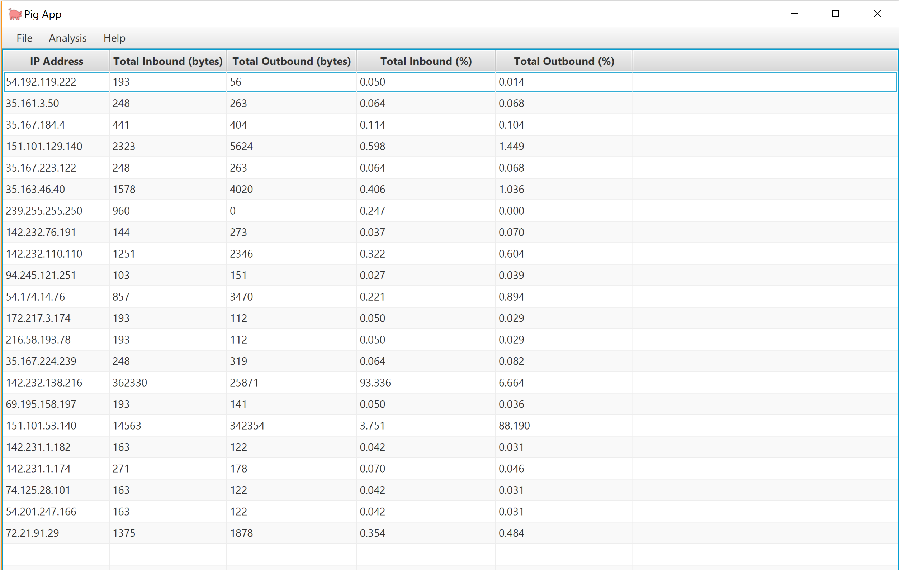

Warframe Chat Room Fansite
This is a chat room site themed after Warframe, a popular video game. Users can make chat rooms and post with a profile or post anonymously.This is one of my best works because I have applied most of my current knowledge of web development in this application. I applied my knowledge of UI/UX to create an aesthetically pleasing site using CSS and images from an official fansite kit. I also needed to apply all my knowledge of JavaScript and JQuery AJAX to make all the interactivity and storing the information server-side. Its features can also be easily integrated with an SQL database.
It is uniquely mine because not only is it based on a game I play regularly, but the underlying infrastructure (the layout of the project files, how the functions in the source code was written, the methods I used to solve the problems I encountered) are all based on my experience and habits I’ve developed over time.
I completed it by basing it off examples the instructor had presented and taught in class, and customized it to be my own. The main issues I encountered came about from my inexperience with using the required modules, specifically ones involving sockets. I resolved the issue by experimenting with the code and reviewing the past examples. From facing these challenges, I because more experienced in working with the modules.
From this work, I gained a better understanding of how server-side scripts communicate with the client-side. I also gained experience in applying my knowledge of UI/UX. Nothing in this project is perfect, but it is a great stepping stone and learning experience.
Video
Heroku Page Link
Screenshots


PigApp
This is a Java application that lets the user import PCAP files made by the packet-capturing software Wireshark. It then parses the data and displays information that a network administrator might find interesting, such as data speed and inbound/outbound traffic.This is one of my best works because it is a culmination of everything I learned in ACIT2515. Through this project, I learned to structure my code effectively, use external Java libraries, collaborate with others through Git, and apply my knowledge of networking in a practical setting.
There were many problems my team and I encountered while working on it, ranging from technical issues such as learning to use the external library, to interpersonal issues such as communication issues within our team. Through these issues, we gained valuable experience in coding, reading documentation, and working effectively with others. This was different from other Java projects because it was the first time we had to collaborate with others on a Java project. It made me realize that everyone has their own way of writing code, and some may be written poorly and harder to understand than others. A lot of refactoring has to be done to ensure code is readable and understandable. Since this project also required us to apply our knowledge of networking, we also gained a better understanding of the structure of packets and the information they can contain.
This project gave a clearer picture on the aspects of code writing and communication that I need to improve on.
GitHub Repository Link Screenshots 
I am a BCIT student in my second year of the Computer Information Technology (CIT) program and I am aspiring to become a DevOps engineer.
During my studies at BCIT, I have acquired skills in object-oriented programming, web development, relational databases, networking, software version control, data analysis, and UI/UX.
As part of a team, I created a Java-based application that can parse and display packet data from a .pcap file. I have also designed and implemented a chat-room web application as a fan-site for the game, Warframe. You can check out both of these in my Projects page.
During my studies at BCIT, I have acquired skills in object-oriented programming, web development, relational databases, networking, software version control, data analysis, and UI/UX.
As part of a team, I created a Java-based application that can parse and display packet data from a .pcap file. I have also designed and implemented a chat-room web application as a fan-site for the game, Warframe. You can check out both of these in my Projects page.